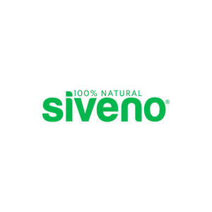

Trade Mark Journal No.2026/010 6 March 2026
UK00004341720 17 February 2026 (3)

- Class 3
- Sun care lotions; Sun care lotions [for cosmetic use]; Essences for skin care; Skin care cosmetics; Skin care preparations; Milky lotions for skin care; Hair care lotions; Hair care creams; Skin care creams, other than for medical use; Beauty creams for body care; Skin care mousse; Exfoliants for the care of the skin; Beauty care cosmetics; Skin, eye and nail care preparations; Body care cosmetics; Skin care lotions [cosmetic]; Hair care serums; Foot masks for skin care; Hair care serum; Lotions for face and body care; Hand masks for skin care; Cleansing milks for skin care; Skin care creams [cosmetic]; Cosmetic creams for skin care; Hair care preparations; Hair care agents; Skin care oils [cosmetic]; Skin care (Cosmetic preparations for -); Cosmetic preparations for skin care; Soaps for body care; Hair care lotions [for cosmetic use]; Skin care oils [non-medicated]; Hair care creams [for cosmetic use]; Non-medicated skin care preparations; Baby care products (Non-medicated -); Baby lotion; Baby lotions; Baby shampoo; Baby oils; Eye care products, non-medicated; Baby oil; Baby suncreams; Baby body milks; Non-medicated face care preparations; Beauty care preparations; Oil baths for hair care; Non-medicated sun care preparations; Body cleaning and beauty care preparations; Facial care preparations; Baby bath mousse; Baby powder; Bleach; Laundry bleach; Household bleach; Liquid dishwasher detergents; Liquid soap for laundry; Laundry detergents for household cleaning use; Laundry liquids; Liquid soaps for laundry; Anti-perspirant deodorants; Roll-on deodorants [toiletries]; Suncare lotions; Shampoo; Skin lotion; Balms (Non-medicated -); Non-medicated lotions; Non-medicated moisturisers; Non-medicated creams; Non-medicated shampoos; Non-medicated soaps; Non-medicated antiperspirants; Non-medicated toiletries; Non-medicated cosmetics; Non-medicated oils; Non-medicated toothpaste; Babies' creams [non-medicated]; Non-medicated skin lotions; Lip balms [non-medicated]; Creams (Non-medicated -) for the eyes; Hand lotion (Non-medicated -); Non-medicated shower oils; Lip balm [non-medicated].
McGunes LTD